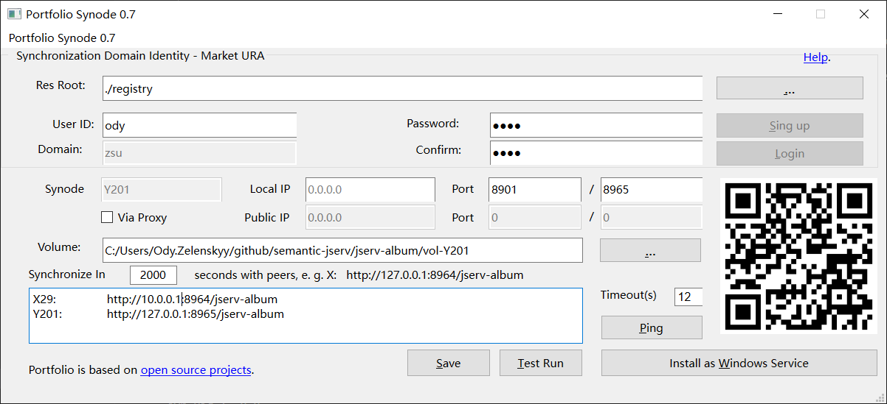

Install Portfolio-synode¶
This document is the 0.7.0 demo version. Some function in the UI is still in developing.
Prerequisit¶
Portfolio-synode requires Python 3.9 and JDK 17.
After installed Python & JDK, also please install Anson.py3, which is not published to PyPI yet:
pip install --index-url https://test.pypi.org/simple --extra-index-url https://pypi.org/simple anson.py3
Install Exiftool For Unix¶
Only Verified on Ubunut 24.04
Portfolio-synode requires Exiftool to run.
Follow the document or use apt to install:
sudo apt install exiftool
and make sure this command runs smoothly:
exiftool -ver
Install Steps¶
Download synode registry, registry.zip from the project’s releas page.
Unzip the Synode registry.
Portfolio Synode 0.7.0 can only work as a stand alone service node. Registry is used in the future for synchronizing register.
Download jserv-album-0.7.0.zip or check lastest version at the project’s releas page.
Unzip in a floder, say, protfolio-synode
Setup Portfolio-synode’ Python module
in portfolio-synode, run:
pip install portfolio_synode-#.#.#-py3-non-any.whl
To check if it’s installed successfully, run:
pip show portfolio-synode
Start Portfolio-synode
Don’t run this in VS Code Termnial in Linux. See the issue & troubleshootings if you have to, while it’s recommended to run this in VS Code in Windows.
Run
python3 -m portfolio-synode
Click the top button for opening registry dir.
User Id, password and Login function are not available in demo version.
Click Setup if everything is OK.
Click Start. The data service should be running now.
Or run “java -jar bin/jserv-album-#.#.#.jar” in the folder.
There should be a QR Code showing in the GUI. You can scan with a Portfolio client, e.g. the Portfolio Android, to connect to this service node.
Check firewall configurations
Protfolio-synode by default will listening on TCP port 8964, the data service, and port 8900, the web page server.
Open the webpage in a browser
Open the home page for listing uploaded files, e.g.:
url: http://127.0.0.1:8900
There should be the files once are uploaded with Portfolio Android.

{kind=link}